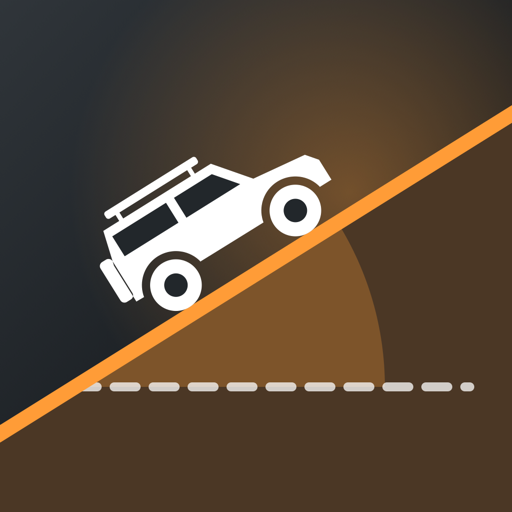
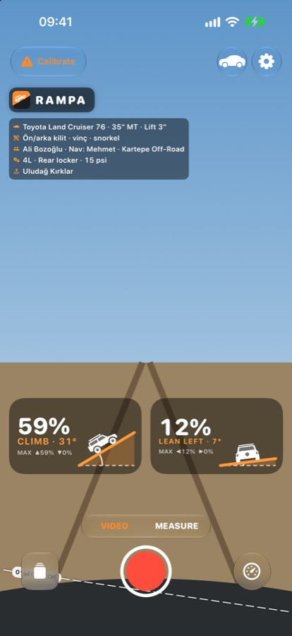
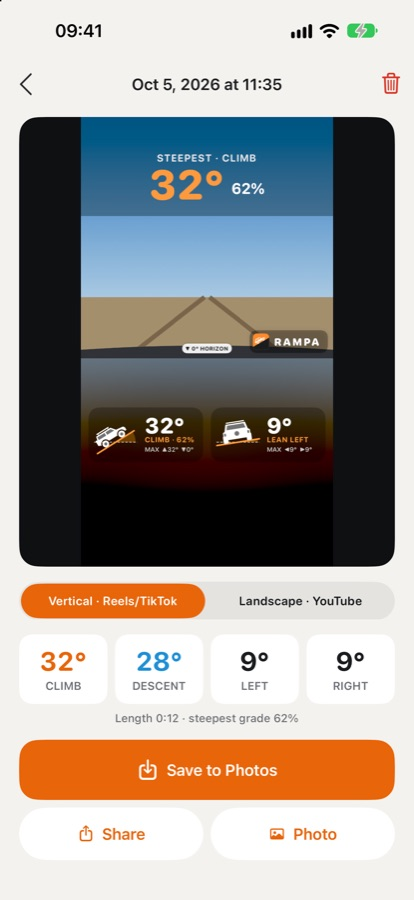
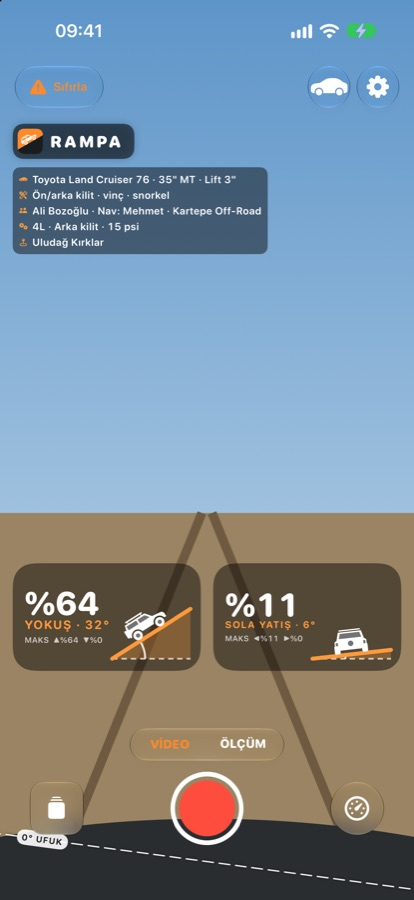
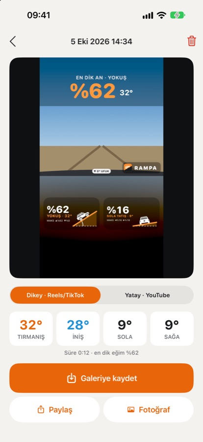

RAMPAYour camera tilts with your vehicle, so the horizon tilts too. Rampa draws the real slope, the 0° horizon and live gauges right on your off-road footage — ready for a vertical story in one tap.
Kamera araçla birlikte eğilir, ufuk da onunla eğilir. Rampa gerçek eğimi, 0° ufuk çizgisini ve canlı göstergeleri arazi videonun üstüne çizer — tek dokunuşla dikey hikâyeye hazır.




Made for off-roaders, from weekend trails to competition.
Hafta sonu parkurundan yarışa, off-road'cular için.
The slope drawn as a real ramp at its true angle, the grade in big numbers (62%) with the angle beside it (32°), the 0° horizon on the video and peak values for every clip.
Eğim gerçek açısında bir rampa olarak çizilir; yüzde büyük (%62), derece yanında (32°). Videoda 0° ufuk ve her klipte en yüksek değerler.
Vertical 9:16 with big gauges and the steepest moment as the headline. Rampa finds the steepest 15 seconds.
Büyük göstergeli, başlıkta en dik an olan dikey 9:16. En dik 15 saniyeyi Rampa bulur.
Action cam videos with motion data, any camera matched by the clock to a Rampa measurement, or manual marking.
Hareket verili aksiyon kamerası videoları, saatten Rampa ölçümüyle eşlenen herhangi bir kamera ya da elle ölçüm.
Vibration and a short sound at the side slope you choose (for example 70% · 35°), plus a big gauge mode while recording.
Seçtiğin yan eğimde (örneğin %70 · 35°) titreşim ve kısa bir ses; kayıt sürerken büyük göstergeli kip.
Vehicle, tyres, lift, driver, club, trail, tyre pressure, 4L and lockers — all optional.
Araç, lastik, lift, sürücü, kulüp, parkur, lastik basıncı, 4L ve kilitler — hepsi isteğe bağlı.
No account. Videos stay on your phone until you share them. Privacy policy
Hesap yok. Videoların sen paylaşana kadar telefonunda kalır. Gizlilik politikası
Calibrate again on level ground, ideally with two-way calibration. Make sure the phone cannot move in its mount; any movement after calibrating changes the angle.
GoPro HERO5 and later (including MAX) record motion data inside the video. Import the original file from the camera, not one re-exported by an editing app, and turn off Horizon Lock. Insta360 and DJI support is in progress. For any other camera, use "Rampa measurement + other camera".
Start a Measure recording in Rampa on the phone in the vehicle and film with your other camera at the same time. When you import the video, Rampa lines them up using the time the video was recorded; you can nudge it by tenths of a second.
Recordings are kept inside Rampa (Recordings, at the bottom left of the camera screen). When you save or share, a copy with the gauges goes to Photos or the app you choose. The original stays clean, so you can change the look and export again.
No. Rampa is for recording and sharing. Angles come from the phone's sensors and depend on how firmly it is mounted. Always drive within your and your vehicle's limits.
Write to info@phisoftware.com.tr. Include your iPhone model and, if you can, a screenshot.
Düz zeminde yeniden sıfırla; mümkünse çift yönlü sıfırlamayla. Telefonun tutucuda oynamadığından emin ol; sıfırlamadan sonra her kayma açıyı değiştirir.
GoPro HERO5 ve sonrası (MAX dahil) hareket verisini videonun içine kaydeder. Kameradan alınmış özgün dosyayı içe aktar, düzenleme uygulamasından yeniden dışa aktarılmışını değil; Ufuk kilidi (Horizon Lock) kapalı olsun. Insta360 ve DJI desteği hazırlanıyor. Başka kameralar için "Rampa ölçümü + başka kamera"yı kullan.
Araçtaki telefonda Rampa ile Ölçüm kaydını başlat, aynı anda diğer kamerayla çek. Videoyu içe aktarınca Rampa ikisini videonun çekildiği saate göre hizalar; saniyenin onda biri kadar kaydırabilirsin.
Kayıtlar Rampa'nın içinde saklanır (kamera ekranının sol altındaki Kayıtlar). Kaydedince ya da paylaşınca göstergeli bir kopya Fotoğraflar'a veya seçtiğin uygulamaya gider. Özgün video temiz kalır; görünümü değiştirip yeniden aktarabilirsin.
Hayır. Rampa kayıt ve paylaşım içindir. Açılar telefonun algılayıcılarından gelir ve telefonun ne kadar sağlam bağlandığına bağlıdır. Her zaman kendinin ve aracının sınırları içinde sür.
info@phisoftware.com.tr adresine yaz. iPhone modelini ve mümkünse bir ekran görüntüsünü ekle.